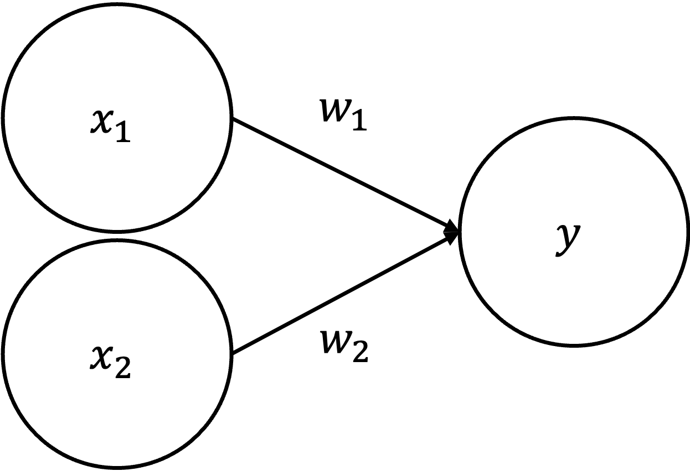
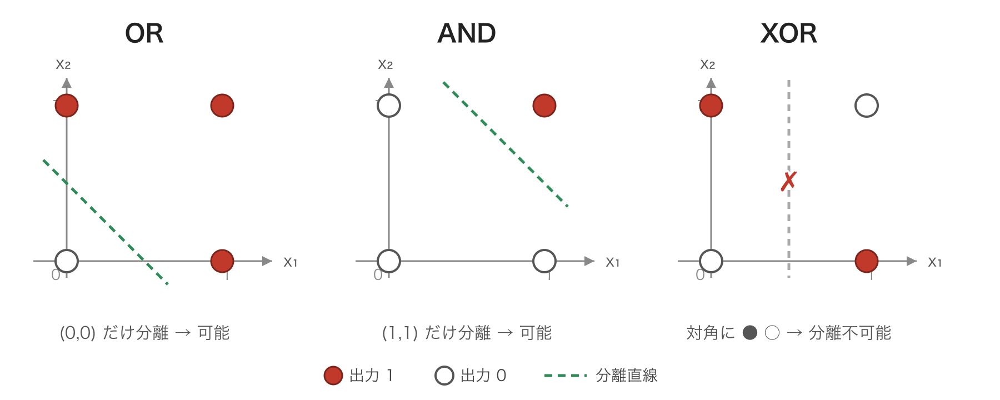

パーセプトロン
ニューラルネットワーク (Neural Network) は, 人間の脳の神経回路を模倣した数学モデルです. 脳は 1000 億個のニューロン (神経細胞) が軸索を通じて結合したネットワークです. あるニューロンが受け取った電気信号が一定の閾値を超えると, そのニューロンも電気信号を発し, つながっている先のニューロンへ伝えます. この仕組みを数学的に模倣したものがパーセプトロンです.

上図のパーセプトロンでは, 2 つのニューロンから発せられた信号 (x_1, x_2 = 0, 1) が, それぞれ重み (w_1, w_2) を掛けられて y に伝わります. 重みは, それぞれのニューロンからの信号の重要性を表します. 例えば, yを以下のように定めると, yは重み付けされたx_1,x_2が特定の閾値\thetaを超えると1, 超えなかった場合は0を発するという意味になります.
y = \begin{cases} 1 & (w_1x_1 + w_2x_2 > \theta) \\ 0 & (w_1x_1 + w_2x_2 \leq \theta) \end{cases}
パーセプトロンはコンピュータの計算における論理演算との関連が深く, 論理演算を実装することができます.
例えば, AND演算とOR演算を考えてみましょう. TRUEを1, FALSEを0とした場合のそれぞれの真偽値表は, 以下のようになります.
- AND
| x_1 | x_2 | ~y~ |
|---|---|---|
| 0 | 0 | 0 |
| 1 | 0 | 0 |
| 0 | 1 | 0 |
| 1 | 1 | 1 |
- OR
| x_1 | x_2 | ~y~ |
|---|---|---|
| 0 | 0 | 0 |
| 1 | 0 | 1 |
| 0 | 1 | 1 |
| 1 | 1 | 1 |
論理ゲートは AND・OR だけではありません. AND の否定である NAND (両方が 1 のときだけ 0) や, 片方だけが 1 のときに 1 になる XOR (排他的論理和) など, いくつかの基本的なゲートがあります. それぞれが「どんな入力のときに 1 を出すか」は, 2 つの集合の重なりとして描くと直感的に理解できます. 円 A を「x_1 = 1」, 円 B を「x_2 = 1」とし, 塗りつぶした領域が出力 1 になる入力の組み合わせを表します (重なり=両方 1, 外側=両方 0).

- AND: 両方が 1 のときだけ 1 = 2 つの円の 重なり だけを塗る.
- OR: どちらかが 1 なら 1 = 2 つの円の 和集合 を塗る.
- NAND: AND の否定 = 重なり以外すべて (外側も含む) を塗る.
- XOR: 片方だけが 1 のとき 1 = 重なりを除いた 左右の三日月 を塗る.
まずはこの図で各ゲートが「何をする演算なのか」を掴んでおきましょう.
このような演算は例えば以下のようにw_1,w_2,\thetaを定めると実現できます.
AND
y = \begin{cases} 1 & (x_1 + x_2 > 1) \\ 0 & (x_1 + x_2 \leq 1) \end{cases}
OR
y = \begin{cases} 1 & (0.5x_1 + 0.5x_2 > 0.2) \\ 0 & (0.5x_1 + 0.5x_2 \leq 0.2) \end{cases}
このとき, 例えばOR演算を実装するyを, y = f(w_1x_1+w_2x_2) として,
f(x) = \begin{cases} 1 & (x > 0.2) \\ 0 & (x \leq 0.2) \end{cases}
のように表すことができます. このような特定のニューロンの発火の有無を決める関数を活性化関数 (activation function) と呼びます.
パーセプトロンでは, 活性化関数として, 特定の閾値に重み付け入力合計値が達するか否かによって出力が0か1のいずれかになります. このような, 0/1が特定の閾値で極端に切り替わる関数をステップ関数, 階段関数などと呼びます.
重みとバイアスでゲートを切り替える
上の AND・OR は, いずれも「重み付き入力の合計がある閾値を超えたら発火する」という同じ仕組みを使っており, 違うのは重み w_1,w_2 と閾値だけでした. 閾値 \theta を左辺に移してバイアス b = -\theta と書き直すと, どのゲートも
y = \begin{cases} 1 & (w_1 x_1 + w_2 x_2 + b > 0) \\ 0 & (\text{otherwise}) \end{cases}
という一つの式で表せます. つまり重み w_1,w_2 とバイアス b という3つのパラメータを変えるだけで, 同じパーセプトロンが別の論理ゲートに変わります. 代表的なゲートのパラメータ例は以下の通りです.
| ゲート | w_1 | w_2 | b | 意味 |
|---|---|---|---|---|
| AND | 0.5 | 0.5 | -0.7 | 両方 1 のときだけ発火 |
| OR | 0.5 | 0.5 | -0.2 | どちらか 1 なら発火 |
| NAND | -0.5 | -0.5 | 0.7 | AND の否定 (両方 1 のときだけ 0) |
NAND (Not AND) は重みとバイアスの符号を AND と反転させたもので, 両方の入力が 1 のときだけ 0 を, それ以外では 1 を出力します.
単層では作れないゲート: XOR と線形分離可能性
ところが, XOR (排他的論理和) だけは, 上のように重みとバイアスを選んでも1個のパーセプトロンでは絶対に表現できません.
| x_1 | x_2 | ~y~ |
|---|---|---|
| 0 | 0 | 0 |
| 1 | 0 | 1 |
| 0 | 1 | 1 |
| 1 | 1 | 0 |
なぜ作れないのかは, 入力平面 (x_1, x_2) に 4 通りの入力を点として打ってみると分かります. パーセプトロンの発火条件 w_1 x_1 + w_2 x_2 + b > 0 は, 境界 w_1 x_1 + w_2 x_2 + b = 0 という 1 本の直線で「出力 1 の点」と「出力 0 の点」を分ける ことに対応します. このように直線で分離できることを 線形分離可能 (linearly separable) といいます.

上図のように, OR は出力 0 の (0,0) だけを, AND は出力 1 の (1,1) だけを, それぞれ 1 本の直線で切り離せます. ところが XOR は, 出力 1 の (1,0), (0,1) と出力 0 の (0,0), (1,1) が 対角に交互 に並ぶため, どんな直線を引いても必ず片側に 1 と 0 が混ざり, 分離できません. これが, 単一のパーセプトロンで XOR を表現できない理由です.
そこで, XOR は 複数のゲートを組み合わせる (層を重ねる) ことで実現します. 例えば
\text{XOR}(x_1, x_2) = \text{AND}\bigl(\text{NAND}(x_1, x_2),\ \text{OR}(x_1, x_2)\bigr)
と書けます. 1段目で NAND と OR を並列に計算し, その2つの出力を2段目の AND に入力する 2層構成 です. このように, 単層では表せない関数も層を重ねれば表せるという事実が, 多層ニューラルネットワークの出発点になります.
なお, ここで挙げた AND・OR・NAND・XOR は, 関数型言語の演習として実際に Haskell で実装できます. 「同じ
perceptron関数の部分適用で各ゲートを作り, それらを合成して XOR を組む」例は 関数型プログラミング講義 fp5 の Exercise CH5-6 を参照してください.
この節に対応する演習は, Exercise DSP8-1です.